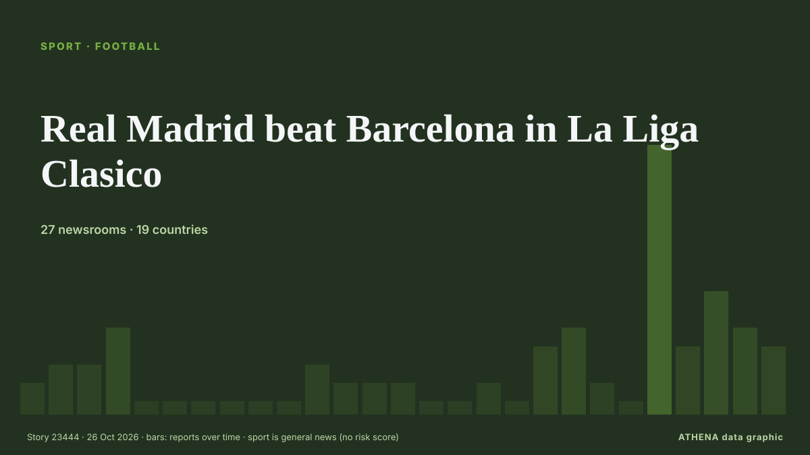

Real Madrid beat Barcelona in La Liga Clasico

Kylian Mbappe struck twice to earn Jose Mourinho’s Real Madrid a 2-1 Clasico victory over La Liga leaders Barcelona on Sunday at Camp Nou, cutting the gap to three points. von The Namibian
Unabhängig gemeldet von 27 Medien in 19 Ländern seit dem 23. Okt., zuerst von Express Tribune; die Berichterstattung ist abgeklungen. Sport und Kultur werden ohne Risikobewertung abgelegt. Die Konfidenz liegt bei 93 % (hoch): 27 Medien bestätigen es unabhängig, bei einer mittleren Verlässlichkeit der Quellen von 74 %. Medien nach Land: Nigeria (11), Katar (6), Singapur (4). Berichterstattung: 23. Okt. bis 26. Okt., 72 Stunden.
Was sich geändert hat: 36 neue Berichte von 23 Redaktionen in den 24 Stunden bis 26. Okt..
Erste Schlagzeile: Real Madrid beat Barcelona 2-1 in La Liga Clasico
Schlagzeilen werden auf Englisch angezeigt, wie veröffentlicht.
Auf einen Blick
Ausgewählt, bewertet und geschrieben nach der veröffentlichten Methodik von ATHENA. Kein Redakteur greift in einzelne Ereignisse ein. So entsteht ATHENA ›
| 23 Oct 03:27 UTC | 1 |
|---|---|
| 23 Oct 06:27 UTC | 2 |
| 23 Oct 09:27 UTC | 2 |
| 23 Oct 12:27 UTC | 4 |
| 23 Oct 15:27 UTC | 0 |
| 23 Oct 18:27 UTC | 0 |
| 23 Oct 21:27 UTC | 0 |
| 24 Oct 00:27 UTC | 0 |
| 24 Oct 03:27 UTC | 0 |
| 24 Oct 06:27 UTC | 0 |
| 24 Oct 09:27 UTC | 2 |
| 24 Oct 12:27 UTC | 1 |
| 24 Oct 15:27 UTC | 1 |
| 24 Oct 18:27 UTC | 1 |
| 24 Oct 21:27 UTC | 0 |
| 25 Oct 00:27 UTC | 0 |
| 25 Oct 03:27 UTC | 1 |
| 25 Oct 06:27 UTC | 0 |
| 25 Oct 09:27 UTC | 3 |
| 25 Oct 12:27 UTC | 4 |
| 25 Oct 15:27 UTC | 1 |
| 25 Oct 18:27 UTC | 0 |
| 25 Oct 21:27 UTC | 14 |
| 26 Oct 00:27 UTC | 3 |
| 26 Oct 03:27 UTC | 6 |
| 26 Oct 06:27 UTC | 4 |
| 26 Oct 09:27 UTC | 3 |
Warum diese Zahlen
Bedeutung
Risiko
Konfidenz
Die Berichterstattung – wer berichtete, und wann
Schlagzeile wie veröffentlicht · öffnet das Original- Express Tribune · PakistanBarcelona eye Clasico statement against Real Madrid
- Asharq Al-Awsat (English) · Saudi-ArabienBarcelona Aiming to Put Real Madrid Out of Sight in Clasico
- Punch · NigeriaLa Liga: El Clásico always 50-50, says Courtois
- Punch · NigeriaBarcelona aiming to put Real Madrid out of sight in Clasico
- Premium Times · NigeriaEl Clásico: UNILAG to host watch party as Barcelona face Real Madrid
- Al Jazeera English · KatarEl Clasico: All to know about the rivalry between Barcelona and Real Madrid
- CNA (Channel NewsAsia) · SingapurMourinho seeks Real Madrid turning point in Clasico full of new faces
- Cyprus Mail · ZypernMourinho seeks Real Madrid turning point in Clasico full of new faces
- IOL · SüdafrikaBarcelona prepare for El Clasico test against Real Madrid as lead hangs in balance
- Punch · NigeriaReal Madrid still a work in progress, says Mourinho ahead of El Clásico
- Al Jazeera English · KatarBarcelona vs Real Madrid: Top 5 El Clasico matches between La Liga giants
- IOL · SüdafrikaMourinho plays down Real Madrid comparisons with Barcelona before Clasico
- Al Jazeera English · KatarBarcelona vs Real Madrid: La Liga – El Clasico preview, predictions, teams
- Punch · NigeriaEl Clásico: No specific plan to stop Yamal, says Mourinho
- Al Jazeera English · KatarEl Clasico awaits a Yamal vs Mbappe showdown on Mourinho’s return to La Liga
- CNA (Channel NewsAsia) · SingapurReal Madrid goalkeeper Courtois to miss Clasico due to illness
- Cyprus Mail · ZypernReal Madrid goalkeeper Courtois to miss Clasico due to illness
- Vanguard · NigeriaReal Madrid’s Courtois to miss El Classico due to illness
- Punch · NigeriaMadrid’s Courtois ruled out of El Clásico with illness
- IOL · SüdafrikaMourinho faces first Barcelona Clasico since Real Madrid return
- Channels TV · NigeriaReal Madrid’s Courtois Down With Flu, Out Of Clasico
- Al Jazeera English · KatarBarcelona 1-2 Real Madrid: La Liga El Clasico – as it happened
- Evening Standard (London) · Vereinigtes KönigreichBarcelona 1-2 Real Madrid: Kylian Mbappe brace seals huge three points in Clasico thriller
- Vanguard · NigeriaReal Madrid beat Barcelona 2-1 in La Liga Clasico
- CNA (Channel NewsAsia) · SingapurReal Madrid defeat Barcelona at Camp Nou to halve gap to LaLiga leaders
- The Namibian · NamibiaReal Madrid beat Barcelona in La Liga Clasico
- Al Jazeera English · KatarReal Madrid beat Barcelona 2-1 at Camp Nou to halve gap to La Liga leaders
- Evening Standard (London) · Vereinigtes KönigreichBarcelona vs Real Madrid LIVE: Clasico result, latest updates and fan reaction
- Channels TV · NigeriaMbappe’s Brace Helps Real Madrid Beat Barcelona In La Liga Clasico
- Gulf News · Vereinigte Arabische EmirateVideo: Real Madrid beat Barcelona in La Liga Clasico
- Anadolu Agency (English) · TürkeiMbappe brace gives Real Madrid 2-1 El Clasico victory
- Punch · NigeriaEl Clásico: Mbappé scores brace as Madrid Beat Barcelona 2-1
- Gulf News · Vereinigte Arabische EmirateJose Mourinho recreates iconic knee-slide celebration at Camp Nou after Real Madrid stun Barcelona in El Clasico
- CNA (Channel NewsAsia) · SingapurMourinho gives Real Madrid the answers to Barcelona test in return to Clasico
- BBC News · Vereinigtes KönigreichMourinho keeps Clasico midas touch 13 years on as La Liga heats up
- Jamaica Observer · JamaikaMbappe double helps Real Madrid stun Barca in La Liga Clasico
- Express Tribune · PakistanReal Madrid beat Barcelona in La Liga Clasico
- MyJoyOnline · GhanaEl Clásico: Kylian Mbappe scores twice to end Laliga leaders’ winning start
- Oman Observer · OmanReal Madrid defeat Barcelona at Camp Nou
- Nile Post · UgandaMbappe double fires Real Madrid to win at leaders Barcelona